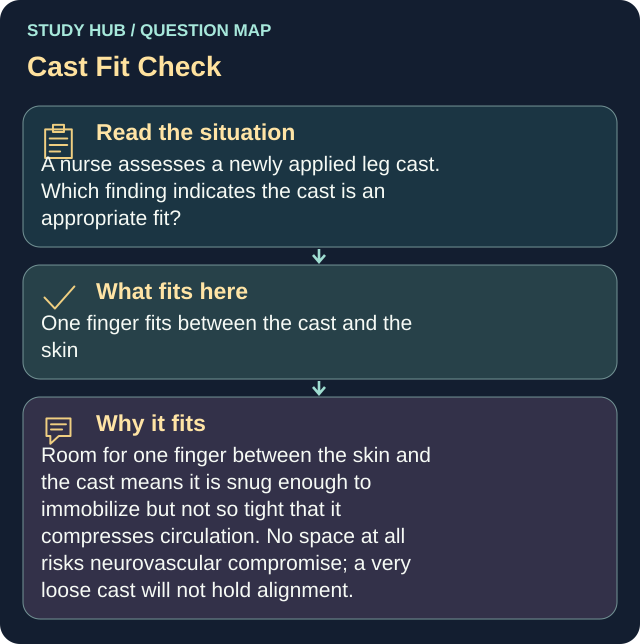

A nurse assesses a newly applied leg cast. Which finding indicates the cast is an appropriate fit?
Answer
One finger fits between the cast and the skin
Reasoning
Room for one finger between the skin and the cast means it is snug enough to immobilize but not so tight that it compresses circulation.
Clinical detail
No space at all risks neurovascular compromise; a very loose cast will not hold alignment.
Why the other answers do not fit
- No space between the cast and the skin
Room for one finger between the skin and the cast means it is snug enough to immobilize but not so tight that it compresses circulation.
- Three fingers fit between the cast and the skin
Room for one finger between the skin and the cast means it is snug enough to immobilize but not so tight that it compresses circulation.
- The client reports the cast feels tight when the leg is dependent
Room for one finger between the skin and the cast means it is snug enough to immobilize but not so tight that it compresses circulation.
